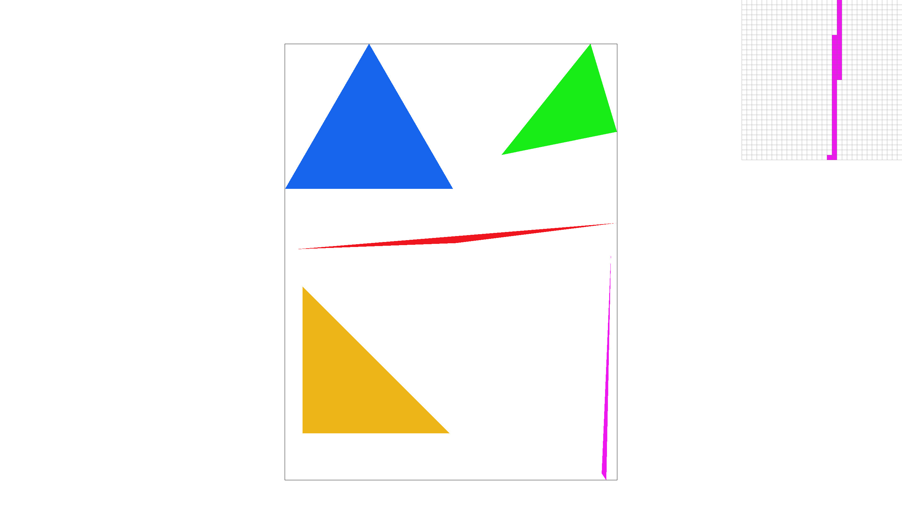
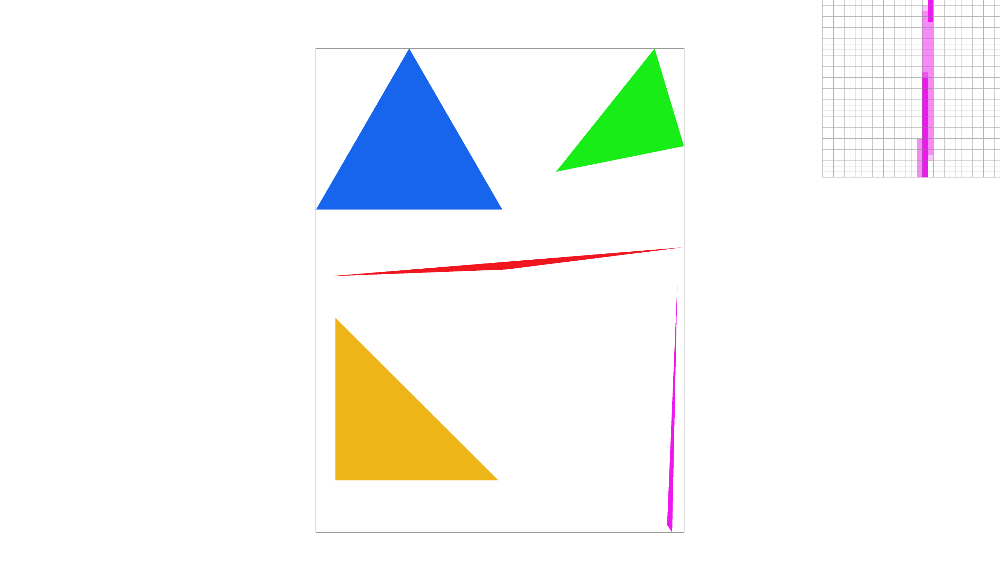
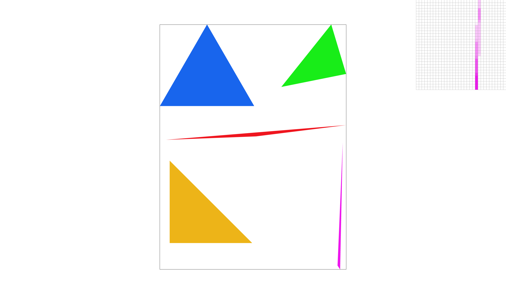
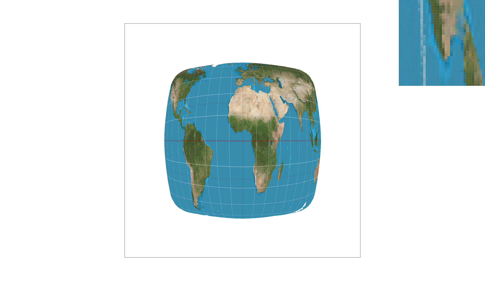
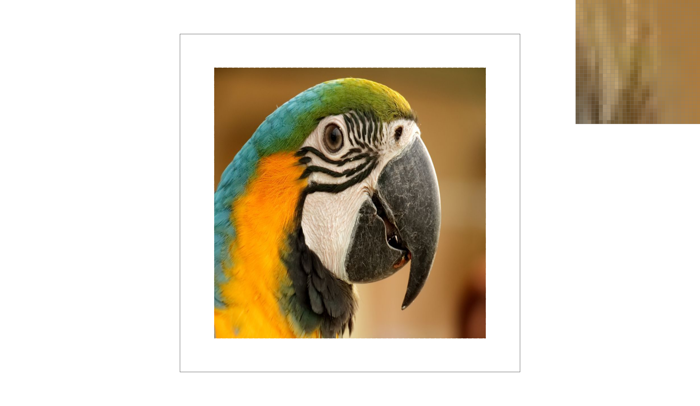
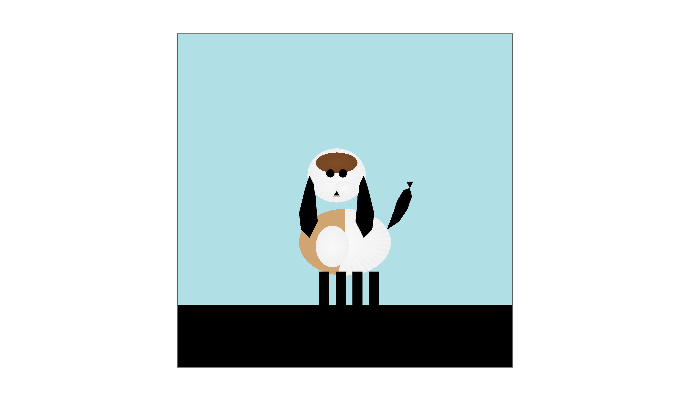

CS184/284A Spring 2026 Homework 1 Write-Up
Link to webpage: https://cal-cs184-student.github.io/hw-webpages-shen147258369/hw1/index.html
Link to GitHub repository: https://github.com/cal-cs184-student/hw1-rasterizer-jinnnn
Overview
This assignment implements a software rasterizer for rendering 2D SVG graphics. The rasterizer handles triangle rasterization, antialiasing through supersampling, geometric transformations, barycentric color interpolation, and texture mapping with different sampling methods.
What I Built
The core rasterization pipeline includes:
- Triangle rasterization using edge functions with bounding box optimization
- Supersampling antialiasing with grid and jittered sampling patterns
- 2D transformations (translation, scaling, rotation) using homogeneous coordinates
- Barycentric interpolation for smooth color gradients across triangles
- Texture mapping with nearest-neighbor and bilinear pixel sampling
- Mipmap level sampling for texture minification antialiasing
Key Learnings
This assignment helped me understand:
- How rasterization converts continuous geometric primitives into discrete pixels
- The tradeoffs between sampling quality and performance
- How edge functions efficiently determine point-in-triangle tests
- The importance of antialiasing techniques for high-quality rendering
- How barycentric coordinates enable smooth interpolation across triangles
- The role of mipmaps in reducing texture aliasing artifacts
The most challenging part was implementing UV differentials for mipmap level calculation, which required understanding how texture coordinates change across screen space.
Task 1: Drawing Single-Color Triangles
Walk through how you rasterize triangles
I implemented triangle rasterization using edge functions. The algorithm works as follows:
- Compute bounding box: Find the min/max x and y coordinates of the three vertices to get the bounding box.
- Convert to pixel coordinates: Use floor() for min values and ceil() for max values to get the pixel range.
- Clamp to screen: Make sure the bounding box stays within the framebuffer bounds.
- Iterate through pixels: For each pixel in the bounding box, sample at pixel center and test if inside the triangle using edge functions.
- Edge function: For an edge from point A to B, the edge function gives positive = left (counter-clockwise), negative = right (clockwise), zero = on the edge.
- Positive = point is to the left (counter-clockwise)
- Negative = point is to the right (clockwise)
- Zero = point is on the edge
- Inside test: A point is inside if all three edge function values have the same sign (or zero). This handles both clockwise and counter-clockwise ordering.
- Fill pixel: If inside, fill the pixel with the color.
Algorithm efficiency: no worse than bounding box sampling
The algorithm only checks pixels within the triangle's bounding box. I iterate through exactly these pixels (start_x = floor(min_x), end_x = ceil(max_x), etc.). I don't check any pixels outside the bounding box, and I check every pixel inside it. So the number of samples is the minimum needed. The complexity is O(area of bounding box), which is optimal for this approach.
Screenshot of basic/test4.svg

This screenshot shows the rendering of basic/test4.svg with the pixel inspector centered on an interesting part of the scene. The image demonstrates that triangles are correctly rasterized, including the rectangle borders which are drawn as thin triangles.
Extra Credit: Optimizations
I implemented a few optimizations to speed up the rasterization:
1. Pre-compute Edge Function Coefficients
I compute the edge vectors and constants once before the loops instead of recalculating them for every pixel. This avoids recalculating (x1-x0), (y1-y0) etc. for every pixel.
2. Incremental Edge Function Evaluation
Edge functions can be evaluated incrementally. When moving from (x, y) to (x+1, y), the value changes by subtracting dy. So I compute the initial edge function values once per row, then just subtract dy when moving right. This reduces per-pixel computation from 6 multiplications + 6 additions to just 3 subtractions.
3. Reduced Memory Access
Keeping edge function values in local variables (registers) and updating them incrementally improves cache locality.
Performance Impact
The optimizations reduce arithmetic operations from ~12 per pixel (6 mult + 6 add) to ~3 per pixel (3 subtract), which is about 75% reduction.
Timing Comparison
I added timing code in DrawRend::redraw(). Here are the results comparing the basic and optimized implementations:
| Test Case | Basic | Optimized | Speedup |
|---|---|---|---|
| test3.svg | 16.951 ms | 15.396 ms | 1.10x |
| test4.svg | 0.597 ms | 0.408 ms | 1.46x |
| test5.svg | 1.279 ms | 0.917 ms | 1.39x |
| test6.svg | 1.019 ms | 0.690 ms | 1.48x |
Results:
- Average speedup: ~1.36x
- Smaller triangles (test4, test5, test6) show better speedup (~1.4-1.5x) because the per-pixel optimization matters more relative to total cost
- Larger triangles (test3) show smaller speedup (1.10x) because the per-row overhead becomes less significant
- The incremental evaluation is effective because it eliminates redundant multiplications and uses simpler operations that pipeline better
Task 2: Antialiasing by Supersampling
Walk through your supersampling algorithm and data structures
I implemented supersampling by treating the sample buffer as a higher-resolution framebuffer. The implementation works as follows:
Data Structure
The sample_buffer is a 1D vector of Color objects with size width × height × sample_rate. For each pixel at position (x, y), there are sample_rate samples stored consecutively.
Algorithm
- Compute grid layout: For sample_rate = n, I create a sqrt(n) × sqrt(n) grid. For example, sample_rate = 16 gives a 4×4 grid.
- Sample positions: Within each pixel, I place samples at grid locations (grid sampling or jittered sampling with random offset).
- Rasterization: For each pixel in the triangle's bounding box, for each sample position, test if inside the triangle and store the triangle color if inside.
- Resolve to framebuffer: After all primitives are rasterized, for each pixel average all sample_rate samples and convert to 8-bit RGB.
Why is supersampling useful?
Supersampling reduces aliasing artifacts by:
- Smoothing edges: Instead of binary in/out decisions, pixels on edges get partial coverage based on how many samples are inside the triangle
- Reducing stair-stepping: The fractional coverage creates smooth gradients at edges
- Better quality: More samples per pixel provide better approximation of the continuous geometry
Modifications to the rasterization pipeline
- fill_pixel(): Modified to fill all sample_rate samples for a pixel (used by points and lines)
- rasterize_triangle(): Changed from single sample per pixel to multiple samples per pixel; samples in a grid pattern; each sample tested independently against the triangle.
- resolve_to_framebuffer(): Averages all samples for each pixel; converts from floating-point Color to 8-bit RGB.
- set_sample_rate() and set_framebuffer_target(): Updated to resize sample_buffer to width × height × sample_rate.
- clear_buffers(): Clears the sample_buffer at the start of each frame.
How supersampling antialiases triangles
When a triangle edge passes through a pixel, some samples fall inside the triangle and some fall outside. The final pixel color is the average of all samples:
- If all samples are inside: pixel is fully colored
- If some samples are inside: pixel gets a partial color (grayish on white background)
- If no samples are inside: pixel remains white
This creates smooth transitions at edges instead of hard boundaries, eliminating the "jaggies" or stair-stepping effect.
Screenshots Comparison
Sample Rate 1 (No Supersampling)

With 1 sample per pixel, edges show clear aliasing artifacts. Each pixel is either fully colored or white, creating a stair-stepped appearance.
Sample Rate 4 (2×2 Grid)

With 4 samples per pixel, edges become noticeably smoother. Pixels on edges show partial coverage, creating a gradient effect.
Sample Rate 16 (4×4 Grid)
With 16 samples per pixel, edges are very smooth. The pixel inspector (top-right) shows how edge pixels have smooth color transitions.
Why these results are observed:
- Sample rate 1: Only one sample at pixel center. Binary decision → hard edges
- Sample rate 4: 2×2 grid provides 4 coverage levels (0%, 25%, 50%, 75%, 100%) → smoother but still visible steps
- Sample rate 16: 4×4 grid provides 16 coverage levels → very smooth transitions, almost continuous
The pixel inspector shows that at higher sample rates, edge pixels contain a mix of colored and white samples, which when averaged produce intermediate gray values that create the smooth appearance.
Extra Credit: Alternative Sampling Pattern (Jittered Sampling)
I implemented Jittered Sampling as an alternative to grid-based supersampling.
Implementation
Instead of placing samples at regular grid positions, jittered sampling adds a random offset to each grid position. The jitter is generated using a hash function based on pixel position and sample index, ensuring:
- Deterministic: Same pixel always gets same jitter (reproducible)
- Random-looking: Breaks up regular patterns
- Bounded: Jitter is limited to keep samples within pixel bounds
Comparison: Grid vs Jittered Sampling
Grid Sampling (P_NEAREST)

Grid sampling places samples at regular positions. This can sometimes create visible patterns or "moire" effects, especially with thin lines or small features.
Jittered Sampling (P_LINEAR)

Jittered sampling randomizes sample positions, which:
- Breaks up regular patterns: Random distribution prevents visible grid artifacts
- Better for thin features: Random sampling can better capture thin lines that might miss grid positions
- Smoother appearance: The randomness helps create more natural-looking antialiasing
When to Use Each
- Grid sampling: Faster (no hash computation), predictable, good for general use
- Jittered sampling: Better for scenes with thin lines, small features, or when grid patterns are visible
Users can toggle between modes using the P key: P_NEAREST = Grid sampling, P_LINEAR = Jittered sampling.
Task 3: Transforms
Implementation
I implemented the three transform functions in transforms.cpp:
1. translate(dx, dy)
Returns a translation matrix in homogeneous coordinates. This matrix translates points by (dx, dy) in the x and y directions.
2. scale(sx, sy)
Returns a scaling matrix in homogeneous coordinates. This matrix scales points by sx in the x direction and sy in the y direction.
3. rotate(deg)
Returns a rotation matrix (counterclockwise) in homogeneous coordinates. The input deg is in degrees and is converted to radians. The rotation is counterclockwise as per SVG specification.
Custom Robot: Waving Cubeman
I created a custom robot SVG (docs/my_robot.svg) with the following modifications:
Changes Made:
- Color scheme: Changed from red to blue for the body and darker blue for the head, with orange arms.
- Waving animation: Modified the left arm to create a waving gesture:
- Upper arm: Rotated -45 degrees (raised up)
- Lower arm: Translated and rotated 30 degrees (bent at elbow)
- This creates a natural waving pose
- Right arm: Kept in normal position for contrast
What I Was Trying to Do:
I wanted to make the cubeman look like he's waving hello. The left arm is raised and bent at the elbow, creating a friendly waving gesture. The different colors help distinguish the body parts and make the robot more visually interesting.

This screenshot shows the cubeman with his left arm raised in a waving position, demonstrating the use of hierarchical transforms (translate, rotate, scale) to create a more dynamic pose.
Extra Credit: Viewport Rotation
I implemented viewport rotation using the Q and E keys: Q = counterclockwise 15°, E = clockwise 15°, Space = reset rotation.
Implementation Details
I added a view_rotation member variable to DrawRend class and modified set_view() to apply rotation to the svg_to_ndc transformation matrix in NDC space around the center point (0.5, 0.5). The rotation is composed as:
- Apply base transformation (translate and scale from SVG to NDC)
- Translate to NDC origin (-0.5, -0.5)
- Apply rotation
- Translate back to NDC center (0.5, 0.5)
This ensures the viewport rotates around its center in NDC space, not around the origin. The view_rotation variable is initialized in init() and reset when the space key is pressed.
Demonstration

The viewport rotation feature allows users to view the scene from different angles, which can be useful for:
- Checking alignment and symmetry
- Viewing complex scenes from different perspectives
- Creating interesting visual effects
Task 4: Barycentric Coordinates
Explanation of Barycentric Coordinates
Barycentric coordinates provide a way to represent any point inside a triangle as a weighted combination of the triangle's three vertices. For a triangle with vertices A, B, and C, any point P inside can be expressed as P = α·A + β·B + γ·C, where α, β, and γ are the barycentric coordinates satisfying:
- α + β + γ = 1
- α ≥ 0, β ≥ 0, γ ≥ 0 (for points inside the triangle)
The barycentric coordinates have a geometric interpretation: they represent the relative areas of the sub-triangles formed by P and the triangle's vertices:
- α = area(PBC) / area(ABC) - weight for vertex A
- β = area(PAC) / area(ABC) - weight for vertex B
- γ = area(PAB) / area(ABC) - weight for vertex C
Visual Demonstration
The following image shows a triangle with one red vertex, one green vertex, and one blue vertex. The colors smoothly blend across the triangle using barycentric interpolation:

In this triangle:
- The top vertex is red (1, 0, 0)
- The bottom-left vertex is green (0, 1, 0)
- The bottom-right vertex is blue (0, 0, 1)
As we move from one vertex to another, the color smoothly transitions:
- Near the red vertex, α ≈ 1, so the color is mostly red
- Near the green vertex, β ≈ 1, so the color is mostly green
- Near the blue vertex, γ ≈ 1, so the color is mostly blue
- In the center, all three coordinates are roughly equal (α ≈ β ≈ γ ≈ 1/3), resulting in a mix of all three colors (white/light gray)
The color wheel shown below demonstrates this interpolation effect across many triangles, each with different vertex colors that blend smoothly.
Implementation
I implemented rasterize_interpolated_color_triangle() by: (1) computing bounding box and iterating through pixels; (2) using edge functions to determine if a sample point is inside the triangle; (3) calculating barycentric coordinates using the edge function values (edge functions give signed areas, divide by triangle area for α, β, γ); (4) interpolating colors as alpha×c0 + beta×c1 + gamma×c2. The edge functions f12, f20, f01 give the signed areas; dividing by the triangle's area gives the barycentric coordinates.
Screenshot of test7.svg (Color Wheel)

This screenshot shows svg/basic/test7.svg rendered with sample rate 1. The color wheel is composed of many small triangles, each with interpolated colors at their vertices. The smooth color transitions demonstrate that barycentric interpolation is working correctly.
Task 5: Pixel Sampling for Texture Mapping
Explanation of Pixel Sampling
Pixel sampling is the process of determining the color value at a given UV coordinate in a texture image. When rendering a textured triangle, we need to map UV coordinates (which are continuous values between 0 and 1) to discrete pixel positions in the texture image. Since UV coordinates are continuous but texture images are discrete grids of pixels, we need a method to determine which pixel(s) to use and how to combine them.
There are two main pixel sampling methods:
1. Nearest Neighbor Sampling (P_NEAREST)
Nearest neighbor sampling selects the single pixel in the texture that is closest to the UV coordinate. This is the simplest and fastest method:
- Convert UV coordinates [0, 1] to texture pixel coordinates [0, width/height]
- Round to the nearest integer pixel coordinates
- Return the color of that pixel
Advantages:
- Very fast (no interpolation needed)
- Preserves sharp edges and pixel art style
Disadvantages:
- Can produce aliasing and blocky artifacts when textures are magnified
- No smooth transitions between pixels
2. Bilinear Interpolation Sampling (P_LINEAR)
Bilinear interpolation samples the four nearest pixels and blends them based on the fractional distance from the UV coordinate:
- Convert UV coordinates to continuous texture pixel coordinates
- Find the four surrounding pixels (forming a 2×2 square)
- Interpolate horizontally between the two bottom pixels and the two top pixels
- Interpolate vertically between the two horizontal interpolations
Advantages:
- Produces smooth, continuous color transitions
- Reduces aliasing artifacts when textures are magnified
- Better visual quality for most applications
Disadvantages:
- Slightly slower (requires 4 pixel lookups and interpolation)
- Can blur fine details in pixel art
Implementation
I implemented texture mapping in three parts: (1) Texture::sample_nearest: convert UV to texture coordinates, round to nearest texel, return color. (2) Texture::sample_bilinear: get four surrounding texels, interpolate horizontally then vertically. (3) RasterizerImp::rasterize_textured_triangle: compute bounding box and pixels, barycentric coordinates, interpolate UV with barycentric weights, sample texture (nearest or bilinear based on psm), store in sample buffer.
Comparison Screenshots
The following screenshots demonstrate the differences between nearest and bilinear sampling at different sample rates. The pixel inspector is positioned over an area where the difference is most visible.
Nearest Neighbor, 1 Sample per Pixel
This shows blocky, pixelated artifacts when using nearest neighbor sampling with 1 sample per pixel. Each pixel takes the color of the nearest texture pixel, creating a "staircase" effect along edges.
Nearest Neighbor, 16 Samples per Pixel
With 16 samples per pixel, supersampling helps reduce aliasing at triangle edges, but the texture itself still shows blocky artifacts because we're still using nearest neighbor sampling for each individual sample.
Bilinear Interpolation, 1 Sample per Pixel

Bilinear interpolation produces much smoother texture appearance even with just 1 sample per pixel. The texture colors blend smoothly, eliminating the blocky artifacts seen in nearest neighbor sampling.
Bilinear Interpolation, 16 Samples per Pixel

Combining bilinear interpolation with 16 samples per pixel produces the smoothest result. Both the texture sampling and triangle edges are anti-aliased, resulting in high-quality rendering.
Analysis and Discussion
When Will There Be a Large Difference?
The difference between nearest and bilinear sampling is most pronounced when:
- Texture Magnification: When a texture is displayed larger than its original size, bilinear interpolation smooths out the pixelation that would be visible with nearest neighbor sampling. Why: Nearest neighbor simply picks one pixel, so when magnified, each texture pixel becomes a visible block. Bilinear blends between four pixels, creating smooth transitions that hide the discrete nature of the texture.
- Low-Resolution Textures: Textures with few pixels benefit more from bilinear interpolation because the smooth transitions hide the limited resolution. Why: With fewer pixels, the blocky nature of nearest neighbor is more obvious. Bilinear interpolation creates the illusion of more detail by smoothly blending between pixels.
- Gradient or Smooth Textures: Textures with gradual color changes (like gradients, skies, or smooth surfaces) show the most improvement with bilinear sampling. Why: These textures rely on smooth color transitions. Nearest neighbor creates visible steps or "banding" where colors jump abruptly, while bilinear creates smooth gradients.
- High Sample Rates: With supersampling (16 samples per pixel), the difference becomes even more noticeable because each subsample gets a smoothly interpolated color rather than a blocky nearest neighbor color. Why: Supersampling averages multiple samples. With nearest neighbor, you're averaging blocky samples, which still looks blocky. With bilinear, you're averaging smooth samples, resulting in even smoother final pixels.
- Oblique Texture Mapping: When textures are mapped at angles or with perspective distortion, bilinear sampling provides better results. Why: The UV coordinates change more gradually across the surface, and bilinear interpolation handles these gradual changes better than nearest neighbor's discrete jumps.
Relative Differences
Nearest vs Bilinear at 1 sample per pixel:
- Bilinear provides significantly smoother texture appearance, eliminating blocky artifacts
- The difference is most visible in areas with gradual color changes
- Nearest neighbor shows visible pixel boundaries, while bilinear creates smooth transitions
- Why the difference: Nearest neighbor is a discrete operation (one pixel), while bilinear is continuous (blends four pixels)
Nearest vs Bilinear at 16 samples per pixel:
- Supersampling helps both methods with triangle edge aliasing
- Bilinear still provides smoother texture sampling even with supersampling
- The combination of bilinear interpolation and supersampling produces the best overall quality
- Why the difference persists: Supersampling helps with geometric aliasing (triangle edges) but doesn't change the texture sampling method. Nearest neighbor still samples discrete pixels, while bilinear still interpolates smoothly.
1 sample vs 16 samples (same method):
- Supersampling primarily helps with triangle edge aliasing
- For nearest neighbor, supersampling doesn't help much with texture quality (still blocky)
- For bilinear, supersampling provides additional smoothness at edges
- Why: Supersampling averages multiple samples to reduce geometric aliasing, but the texture sampling method (nearest vs bilinear) determines the quality of each individual sample
Conclusion: Bilinear interpolation is generally preferred for most applications because it provides smooth, high-quality texture rendering with minimal performance cost. The smooth color transitions eliminate visible pixel boundaries and create more realistic-looking textures. Nearest neighbor sampling is mainly useful for pixel art (where blocky appearance is desired) or when performance is critical and visual quality can be sacrificed.
Task 6: Level Sampling with Mipmaps
Explanation of Level Sampling
Level sampling (also known as mipmapping) is a technique used to reduce aliasing artifacts when textures are minified (displayed smaller than their original size). The core idea is to pre-compute multiple versions of a texture at different resolutions, called mipmap levels:
- Level 0: Full resolution texture (original size)
- Level 1: Half resolution (width/2 × height/2)
- Level 2: Quarter resolution (width/4 × height/4)
- And so on...
When rendering, we select an appropriate mipmap level based on how much the texture is being scaled. If a texture is displayed very small on screen, we use a lower resolution mipmap level to avoid sampling too many texture pixels per screen pixel, which causes aliasing and moiré patterns.
How Mipmap Level is Calculated
The mipmap level is determined by the rate of change of UV coordinates across screen space. We compute:
- UV derivatives: How much UV coordinates change per screen pixel in x and y directions (du/dx, dv/dx when moving one pixel right; du/dy, dv/dy when moving down).
- Level calculation: L = max of derivative lengths, level = log2(L). When L = 1 we use level 0 (full resolution); when L = 2 we use level 1 (half resolution), etc.
Level Sampling Methods
- L_ZERO: Always use level 0 (full resolution), ignoring the computed level. This is fast but can cause aliasing when textures are minified.
- L_NEAREST: Compute the appropriate level and round to the nearest integer mipmap level. This provides good quality with minimal overhead.
- L_LINEAR: Compute the level as a continuous value, then linearly interpolate between the two adjacent mipmap levels. This is called trilinear filtering when combined with bilinear pixel sampling, providing the smoothest results.
Implementation
I implemented level sampling in three parts:
1. Texture::get_level(SampleParams)
This function calculates the appropriate mipmap level based on UV derivatives (duv_dx, duv_dy from sample params, scale by texture size, L = max of derivative lengths, level = log2(L)).
2. Texture::sample(SampleParams)
This function selects the appropriate sampling method based on lsm and psm:
- L_ZERO: Always samples from level 0
- L_NEAREST: Rounds the computed level to nearest integer and samples from that level
- L_LINEAR: Samples from two adjacent levels and linearly interpolates between them (trilinear filtering)
3. RasterizerImp::rasterize_textured_triangle
For each sample point I compute UV at (x,y), (x+1,y), and (x,y+1), and pass them to Texture::sample() via SampleParams to enable level computation.
Tradeoffs: Speed, Memory, and Antialiasing
Pixel Sampling (P_NEAREST vs P_LINEAR)
Speed:
- P_NEAREST: Very fast - single texture lookup
- P_LINEAR: Slightly slower - 4 texture lookups + interpolation
Memory: Same memory usage for both methods.
Antialiasing:
- P_NEAREST: No antialiasing - can show blocky artifacts when textures are magnified
- P_LINEAR: Provides antialiasing for texture magnification - smooth color transitions
Level Sampling (L_ZERO vs L_NEAREST vs L_LINEAR)
Speed:
- L_ZERO: Fastest - always uses level 0, no computation needed
- L_NEAREST: Fast - computes level once, single mipmap lookup
- L_LINEAR: Slower - computes level, samples from 2 mipmap levels, interpolates
Memory: All methods use the same mipmap pyramid (pre-computed). L_LINEAR requires accessing 2 levels simultaneously, but memory overhead is minimal.
Antialiasing:
- L_ZERO: No antialiasing for minification - can show aliasing and moiré patterns
- L_NEAREST: Good antialiasing for minification - reduces aliasing significantly
- L_LINEAR: Best antialiasing - smoothest transitions between mipmap levels
Samples Per Pixel (1 vs 4 vs 16)
Speed:
- 1 sample: Fastest - one sample per pixel
- 4 samples: 4× slower - 4 samples per pixel
- 16 samples: 16× slower - 16 samples per pixel
Memory:
- 1 sample: width × height samples in buffer
- 4 samples: 4 × width × height samples
- 16 samples: 16 × width × height samples
Antialiasing:
- 1 sample: No geometric antialiasing - jagged triangle edges
- 4 samples: Moderate geometric antialiasing
- 16 samples: Excellent geometric antialiasing - very smooth edges
Combined Effects
The best quality (but slowest) combination is:
- P_LINEAR + L_LINEAR + 16 samples = Trilinear filtering with supersampling
The fastest (but lowest quality) combination is:
- P_NEAREST + L_ZERO + 1 sample = No filtering, no antialiasing
For most applications, a good balance is:
- P_LINEAR + L_NEAREST + 4 samples = Good quality with reasonable performance
Comparison Screenshots
The following screenshots demonstrate different combinations of level sampling and pixel sampling methods using a texture image. All screenshots use 1 sample per pixel to focus on the texture sampling differences.
L_ZERO + P_NEAREST

This combination uses full resolution texture (level 0) with nearest neighbor pixel sampling. The texture shows blocky, pixelated artifacts, especially when magnified. There's no antialiasing for either texture magnification or minification.
L_ZERO + P_LINEAR

Using bilinear pixel sampling with level 0 provides smooth color transitions, eliminating the blocky artifacts seen in nearest neighbor sampling. However, when the texture is minified (zoomed out), aliasing and moiré patterns can still appear because we're always using the full resolution texture.
L_NEAREST + P_NEAREST

With level sampling enabled, the texture automatically uses lower resolution mipmap levels when minified, reducing aliasing. However, nearest neighbor pixel sampling still produces blocky artifacts when the texture is magnified.
L_NEAREST + P_LINEAR

This combination provides the best overall quality: bilinear pixel sampling smooths out magnification artifacts, while level sampling (mipmapping) reduces minification aliasing. The texture appears smooth and free of aliasing artifacts in both cases.
Analysis
Key Observations:
- L_ZERO vs L_NEAREST: When textures are minified (zoomed out), L_NEAREST significantly reduces aliasing and moiré patterns by using appropriate mipmap levels. L_ZERO can show severe aliasing in these cases.
- P_NEAREST vs P_LINEAR: Bilinear pixel sampling provides much smoother texture appearance, especially when textures are magnified. Nearest neighbor creates visible pixel boundaries.
- Combined Effect: The combination of L_NEAREST + P_LINEAR provides excellent quality for both magnification and minification, making it the preferred choice for most applications.
- Performance Tradeoff: L_LINEAR (trilinear filtering) provides even smoother results by interpolating between mipmap levels, but at additional computational cost. For most cases, L_NEAREST + P_LINEAR provides a good balance between quality and performance.
When to Use Each Method:
- L_ZERO + P_NEAREST: Fastest, suitable for pixel art or when performance is critical
- L_ZERO + P_LINEAR: Good for textures that are always displayed at similar sizes
- L_NEAREST + P_NEAREST: Good balance when textures vary in size but pixel art style is desired
- L_NEAREST + P_LINEAR: Best general-purpose combination (recommended)
- L_LINEAR + P_LINEAR: Highest quality, use when visual quality is paramount
Extra Credit: Creative Artwork
Artwork Description
I created a stylized Beagle dog titled "Cute Beagle" - a charming, geometric representation of a beagle using colored triangles and polygons. The design captures the characteristic features of a beagle: long floppy ears, expressive eyes, a distinctive snout, and the classic beagle color pattern of white, tan, and brown.

How I Created It
I wrote a Python script (src/generate_art.py) that programmatically generates the SVG file. The script creates a stylized beagle using geometric shapes with the following features:
Algorithm
- Body Structure: The beagle is constructed from several main components:
- Head: An oval shape positioned above the body
- Body: A larger oval representing the torso
- Ears: Two long, floppy triangular shapes on either side of the head
- Legs: Four rectangular legs (two front, two back)
- Tail: A curved tail with a white tip
- Snout: A smaller oval extending from the head
- Color Palette: Uses authentic beagle colors:
- White (0.95, 0.95, 0.95): For the body, chest, snout, and tail tip
- Tan (0.85, 0.65, 0.45): For patches on the body and back legs
- Brown (0.55, 0.35, 0.20): For the ears and head patch
- Black (0.1, 0.1, 0.1): For the eyes and nose
- Pink (0.95, 0.75, 0.80): For the inner ear
- Shape Generation:
- Oval shapes (head, body, snout): Created using triangles radiating from the center, with varying colors for depth
- Polygons: Used for ears, legs, tail, and patches
- Triangles: Used for the nose and to create smooth oval shapes
- Triangle Rendering: The oval shapes (head, body, snout) are rendered using colored triangles with barycentric interpolation:
- Each oval is divided into 32 triangular segments
- Triangles radiate from the center point
- Each vertex has slightly different brightness to create depth
- Color varies based on position to create the characteristic beagle markings
- Background: Added a simple sky-blue background with green grass at the bottom to place the beagle in a natural setting.
Technical Details
- Resolution: 800×800 pixels as required
- Background: Black (#000000) to make colors pop
- Elements Used: colortri for triangles with barycentric color interpolation, polygon for circles, rect for background.
The Script
The script (src/generate_art.py) defines parameters, generates SVG header and background, builds shapes (ovals from triangles, polygons for ears/legs/tail), outputs colortri and polygon elements, and writes the complete SVG file.
Key Features
- Procedural Generation: The entire beagle is generated algorithmically, making it easy to modify size, colors, and proportions
- Geometric Stylization: Uses simple geometric shapes (ovals, triangles, polygons) to create a recognizable beagle silhouette
- Authentic Colors: Uses the classic beagle color scheme (white, tan, brown, black)
- Barycentric Interpolation: The oval shapes use colored triangles with barycentric interpolation to create smooth gradients and depth
- Characteristic Features: Includes all the distinctive beagle features: long ears, expressive eyes, snout, and color patches
Running the Script
To regenerate the artwork, run the script from the src directory; it creates docs/competition.svg which can then be rendered using the rasterizer.
Artistic Intent
The "Cute Beagle" combines the precision of geometric art with the warmth of a beloved pet. By using simple shapes and the rasterizer's barycentric color interpolation, I created a stylized yet recognizable representation of a beagle. The design demonstrates how complex forms can be broken down into basic geometric primitives while maintaining character and charm. The authentic beagle color palette and characteristic features (long ears, expressive eyes, distinctive markings) make the dog instantly recognizable, while the geometric construction showcases the technical capabilities of the rasterizer.